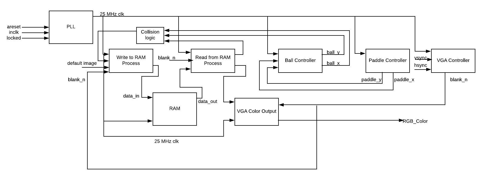
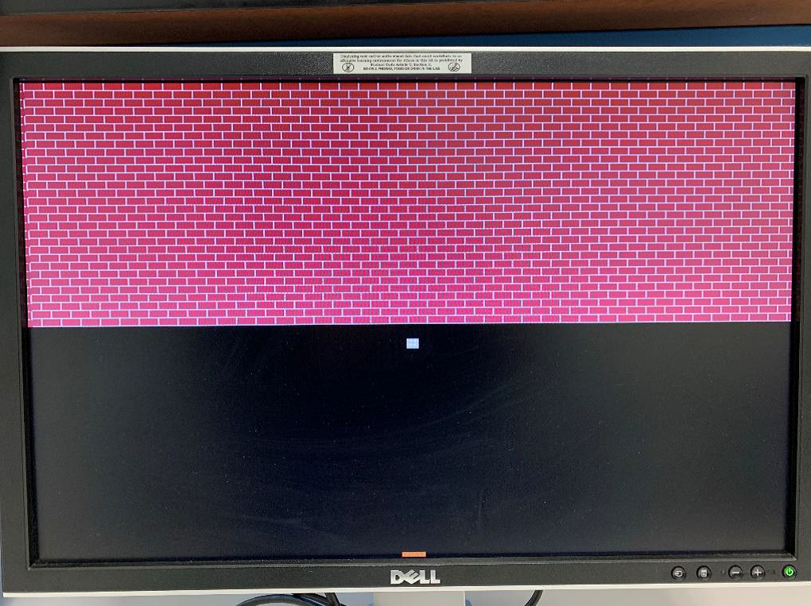
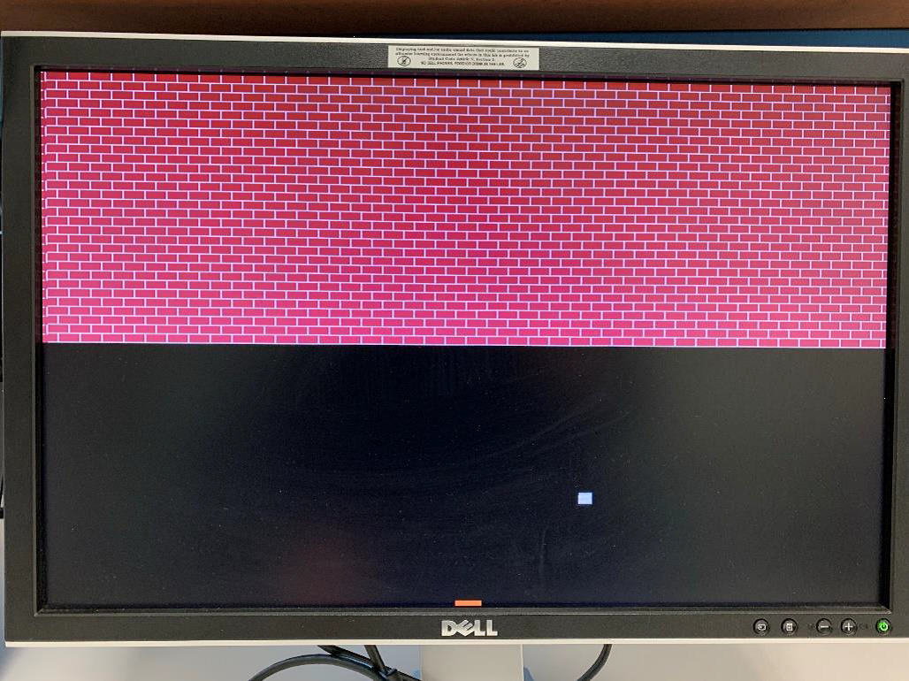
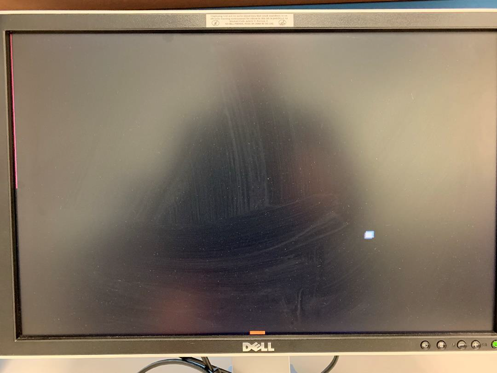

The task for this project involves designing a complete “brick breaker” or “breakout” video game using a DE10-Lite FPGA board and a VGA monitor. When complete, the user will use two buttons: one to reset the game, and another to drop a new ball. The user may request 5 new balls, after which the game is over and reset must be preset to continue. A paddle is implemented as user input as well, which the ball bounces off until they miss the ball or the game is complete.
The first step in the procedure is to create a well-defined high-level design. Our design included (1) a process to write to RAM, (2) a process to read from RAM, update the information as necessary, and then write back to RAM, (3) a process to control the graphics of the paddle, (4) a process to control the graphics of the ball, and (5) processes to control video signals and update the RAM addresses necessary to write to RAM. In addition, we used an IP Catalog dual-port RAM block as well as a PLL for clock division and synchronization.
Results:
The results of the procedure were as expected up to a certain point. We were successful in writing the default image to RAM, reading it from RAM, implementing paddle graphics and control, and implementing ball graphics correctly, as well as ensuring that the ball “dropped” out of the screen if not hit by the paddle. The results we were unable to achieve were correctly getting bricks to break by updating RAM. When the ball makes contact with the bricks, the entire wall breaks. While this provides a quick and simple way to beat the game, it is not the desired result. There appears a bug when writing updates to the synthesized RAM. The bug has yet to be found.
The figures below show the high-level design developed for this lab (figure 1.1) the initial screen for the game (figure 1.2), the ball moving during gameplay (figure 1.3), and the brick wall once it is broken (figure 1.4). Note: no finite-state machines were implemented in this design.
Figure 1.1

Figure 1.2

Figure 1.3

Figure 1.4
